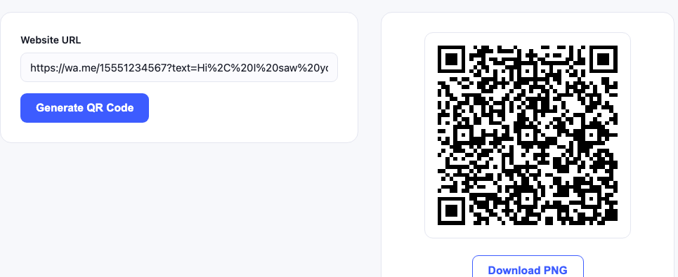

There are two completely different things people mean by "WhatsApp QR code", and picking the wrong one is why most attempts fail.
WhatsApp's own QR code, found in the app under Settings, adds you as a contact. It works, but it only lives inside the app, you cannot print it from a computer, and it cannot carry a prefilled message.
A wa.me link QR code, which is what this guide covers, opens a chat with your number directly, optionally with a message already typed. It is just a web link, so you can generate it anywhere, print it at any size, and it works whether or not the scanner has you saved as a contact.
For anything on a shop window, a van, a flyer or a business card, the second one is what you want.
How the wa.me link works
The format is simple:
https://wa.me/15551234567
That is the whole thing. The number is written in full international format with no plus sign, no spaces, no dashes and no brackets. This is where almost everyone goes wrong, so it is worth being precise:
| Your number | Wrong | Correct |
|---|---|---|
| US (555) 123 4567 | wa.me/+1 (555) 123-4567 | wa.me/15551234567 |
| UK 07700 900123 | wa.me/07700900123 | wa.me/447700900123 |
| Pakistan 0300 1234567 | wa.me/03001234567 | wa.me/923001234567 |
Notice the UK and Pakistan rows: the leading zero is dropped and replaced by the country code. Leaving the zero in is the single most common reason a wa.me link opens WhatsApp and then says the number is invalid.
Adding a prefilled message
You can put words in the chat box before the person has typed anything, by adding ?text= to the link:
https://wa.me/15551234567?text=Hi%2C%20I%20saw%20your%20card
The message has to be URL encoded, which means spaces become %20 and commas become %2C. Our URL QR code generator handles the encoding for you, so you can paste the readable version and it will work.
The prefilled text is a default, not a lock. The sender sees it in the box and can edit or delete it before sending.
Making the code

- Build your link using the rules above. Test it in a browser first, it should open WhatsApp.
- Paste it into the URL QR code generator and generate.
- Download the PNG and scan it with a phone before printing anything.
Test the link before you test the code. If the wa.me link is wrong, the QR code will be a perfect encoding of a broken link. Open it in a browser first: a correct link opens WhatsApp with your chat. A wrong one opens WhatsApp and reports an invalid number.
How much the message length costs you
A longer prefilled message means more characters in the link, which means a denser code. We generated all three and decoded each one back:
| Link | Characters | Grid |
|---|---|---|
| Number only | 25 | 25 x 25 |
| Short message | 33 | 29 x 29 |
| Longer message | 93 | 41 x 41 |
All three scanned. But the 41 x 41 grid packs more modules into the same printed square, so it needs to be printed larger to stay reliable. If the code is going on something small, keep the prefilled message short or drop it entirely. The print sizing guide covers the maths.
Where this actually earns its place
- Shop windows and A boards. A passerby can message you after closing time without writing your number down.
- Vans and job site boards. Tradespeople get enquiries from people who would never have typed a number from a moving vehicle.
- Business cards. Especially in markets where WhatsApp is the default business channel, which covers most of South Asia, the Middle East, Latin America and southern Europe.
- Product packaging. A support channel that does not need an app download or an account.
- Table cards. Prefilled with the table number, so you know where the message came from.
Sorting incoming messages without any software
The prefilled message is a free routing system. Give each printed placement its own opening text:
- Window card:
?text=Enquiry%20(window) - Van:
?text=Enquiry%20(van) - Flyer:
?text=Enquiry%20(flyer)
After a month, the opening lines in your chat list tell you which printed material is actually producing enquiries. No analytics service, no dynamic code subscription.
Business account or personal?
A wa.me link works with both. WhatsApp Business adds things worth having if enquiries become regular: a business profile with opening hours, automated greeting and away messages, quick replies for common questions, and labels for organising chats. The link format does not change, so you can switch later without reprinting anything.
What can go wrong
"The phone number shared via url is invalid"
The number format is wrong. Nearly always a leading zero that should have been replaced by the country code, or a plus sign left in.
The code opens a browser page instead of WhatsApp
That happens when WhatsApp is not installed on the scanning device. The wa.me page offers to install it, which is the correct fallback.
The prefilled message shows as gibberish
Encoding problem. Special characters, accents and emoji need proper URL encoding. Generate the code from the readable text and let the tool encode it.
It works on my phone but not others
Test on a phone that does not have you saved as a contact and has never chatted with you. Your own device behaves differently.
A note on privacy
A printed wa.me code publishes your phone number to anyone who scans it, and the number is readable in the code's contents even without opening WhatsApp. That is fine for a business line. Think twice before printing a personal number on anything public, and consider a separate business number if enquiries grow.
Nothing you type into our generator reaches a server, the code is built in your browser, but that only protects the generation step. Once printed, the number is public.
Other codes worth having alongside
Businesses that print a WhatsApp code usually want one or two more: a vCard code so people can save your full details, a WiFi code if you have a premises, and a review code at the counter. If you prefer SMS to WhatsApp, the SMS generator does the same job through the built in messaging app.
Common questions
Do I need WhatsApp Business for a wa.me link?
No. A wa.me link works with a normal WhatsApp account. Business adds a profile, opening hours and automated replies, which become useful once enquiries are regular, and the link format does not change if you switch later.
Why does my wa.me link say the number is invalid?
The number format is wrong. Use full international format with no plus sign, no spaces and no leading zero. A UK 07700 900123 becomes 447700900123.
Can I use a WhatsApp QR code without giving out my number?
No. A printed wa.me code publishes the number to anyone who scans it, and the number is readable in the code contents even without opening WhatsApp. Use a separate business number if that matters.